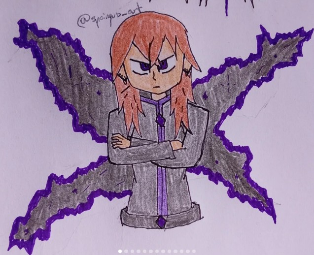

Abismo
Luna mantiene una conexión directa con el Abismo y con las fuerzas destructivas asociadas a su naturaleza divina.
EXPEDIENTE DE AGENTE
Agente de Aethereum · Universo R-786

IDENTIDAD
Antigua Sai y actual entidad vinculada al Abismo. Luna posee una naturaleza divina relacionada con la destrucción y las fuerzas que existen más allá de la realidad convencional.
CAPACIDADES
Luna mantiene una conexión directa con el Abismo y con las fuerzas destructivas asociadas a su naturaleza divina.
Una capacidad que permite a Luna desplazarse entre realidades y líneas temporales.
Luna posee una naturaleza de diosa vinculada a la destrucción y al poder del Abismo.
CONEXIONES
Pareja de Luna y miembro de Nexus.
Hija de Luna y Elandor. Nacida en 2032 y poseedora de una naturaleza semidivina.
ORGANIZACIÓN
Luna forma parte de Nexus junto a Elandor y Revelion. El grupo está relacionado con algunos de los acontecimientos más importantes del multiverso.
REGISTRO AETHEREUM
Parte del historial de Luna permanece clasificado debido a su relación con el Abismo y a los acontecimientos que afectan a múltiples realidades.